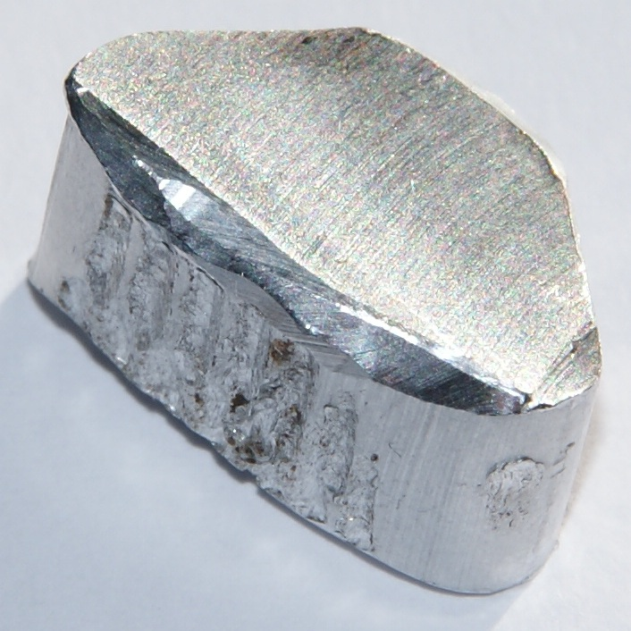
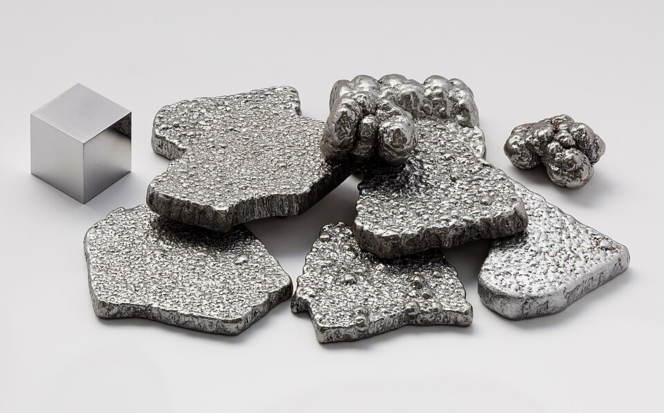
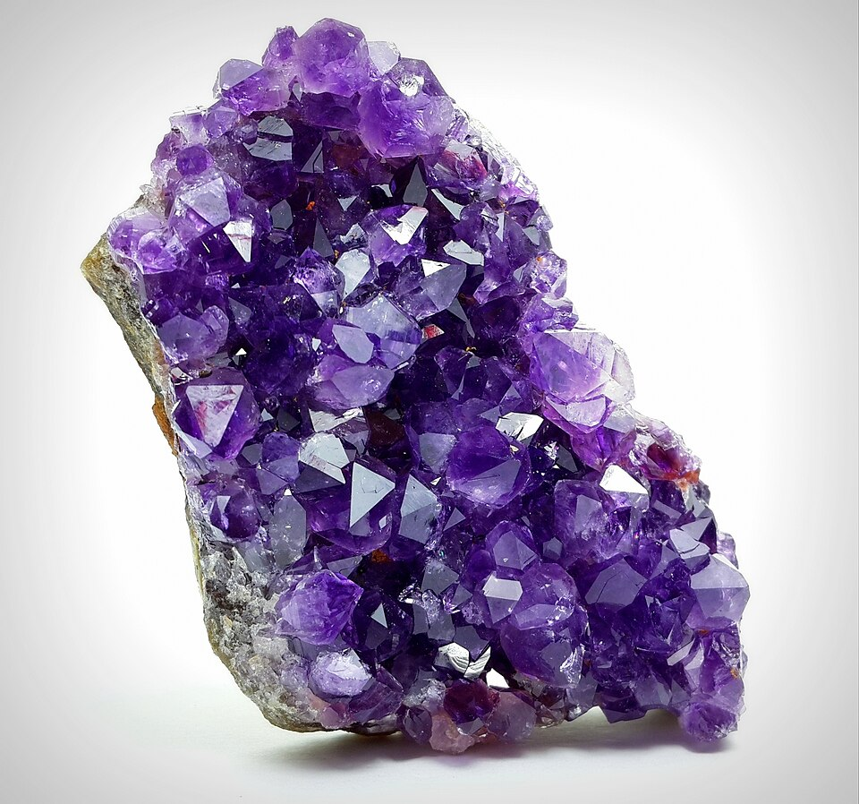
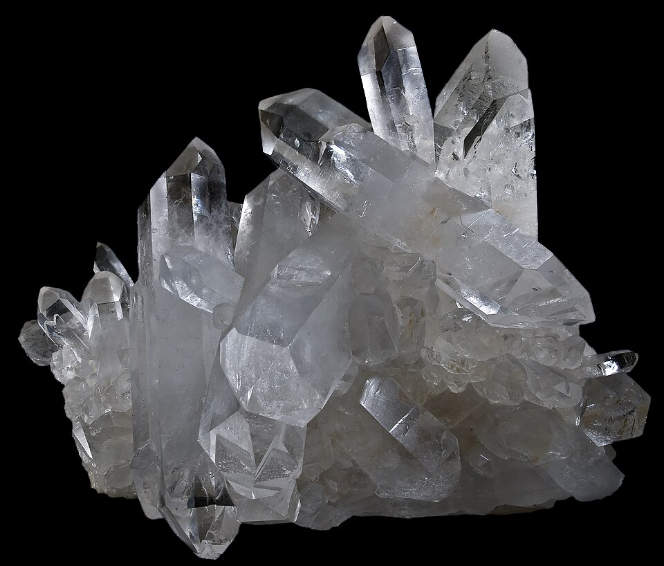

Order your personal crystal block.
These are the sort of thing that goes in the parcel. A metal lump, or a crystal. Not jewellery.

Aluminium

Iron

Amethyst

Quartz
We are Pat and Ngaire Bennett. We live in Feilding, in the Manawatū, New Zealand. From the home block we post a small crystal, or a lump of cheap metal, to people here and in other countries. You pay the postage, and you pay a customising fee. The fee is NZ$15. The postage depends on the weight and where you live. We work that out after you write.
You tell us your birthday, about what time you were born, and the town and country. We use ordinary Western astrology, the tropical kind from the newspaper, and we pick one cheap crystal for the sun sign. If you know the time and the place, we have a rough go at the rising sign, and that picks the metal. If you do not know the time, we still pick a metal, from the planet that is supposed to rule the sun sign. Only the cheap metals. We do not keep gold or silver.
Benefits
People write and ask what the stones are for. These are beliefs other people hold. We do not promise them, and they are not a treatment.
- People say amethyst is for calm, or a quieter mind.
- Rose quartz is traditionally thought to be about love.
- Obsidian and hematite are talked about for protection. A pebble is not a lock.
- Smoky quartz, hematite and iron are traditionally thought to be grounding, as in feeling a bit more planted.
- People say clear quartz is for focus. It is still just quartz.
- Citrine is one folk mention for a brighter mood.
- Carnelian and tiger's eye are said to be for getting on with things.
- Sodalite and fluorite get mentioned for study and sorting your thoughts.
- Green aventurine is traditionally thought of as a lucky green pebble.
- Agate, red jasper and howlite are talked about as steady or calming.
If you are ill, see a doctor. We post stones.
You can fill in the birth survey, look at the list of stones and metals, go to the order form, or write to us.